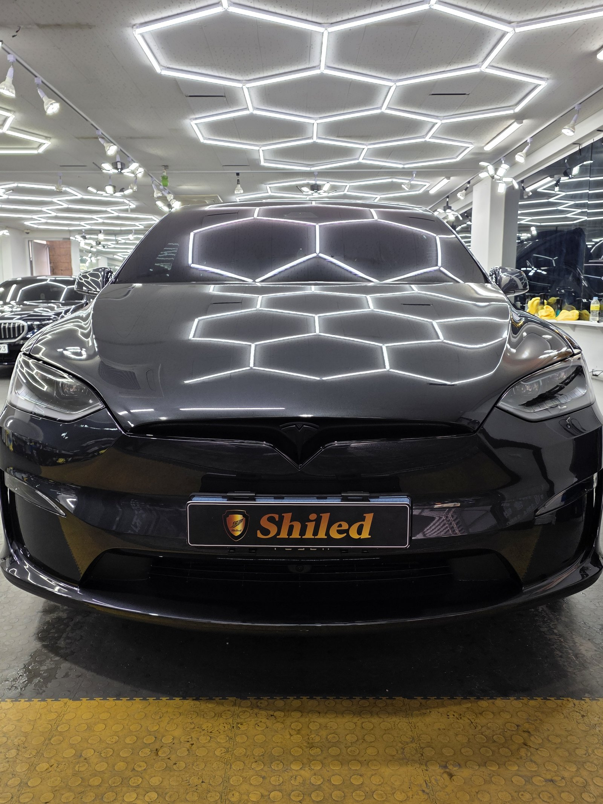
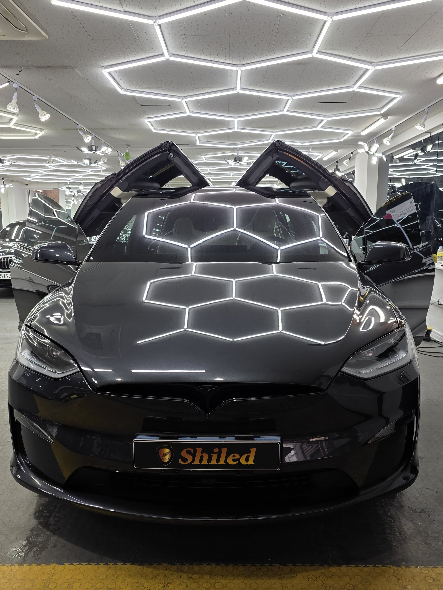
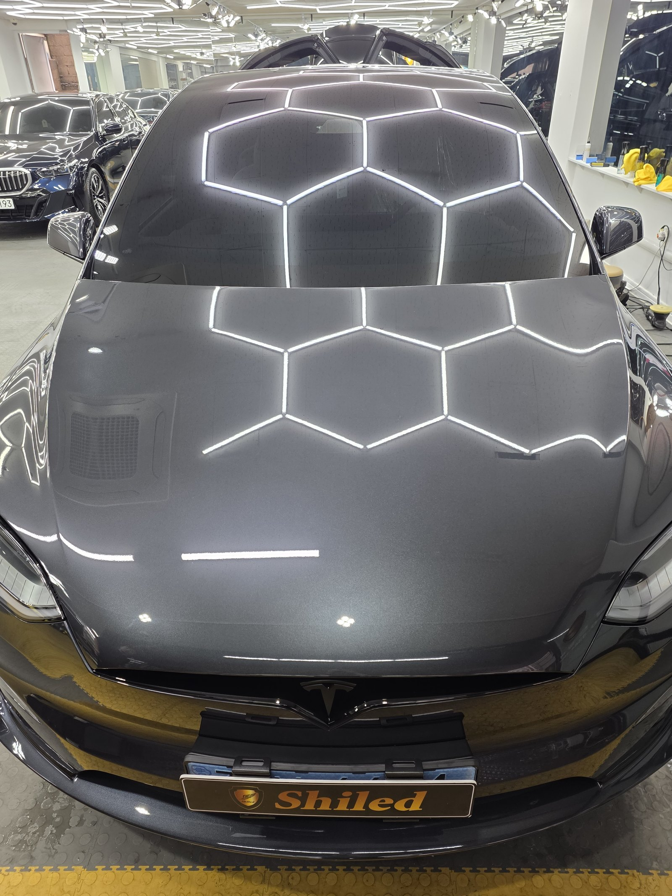
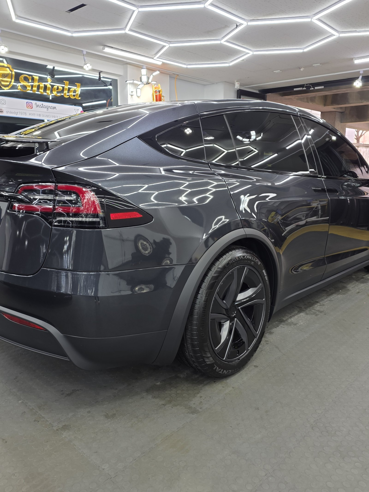
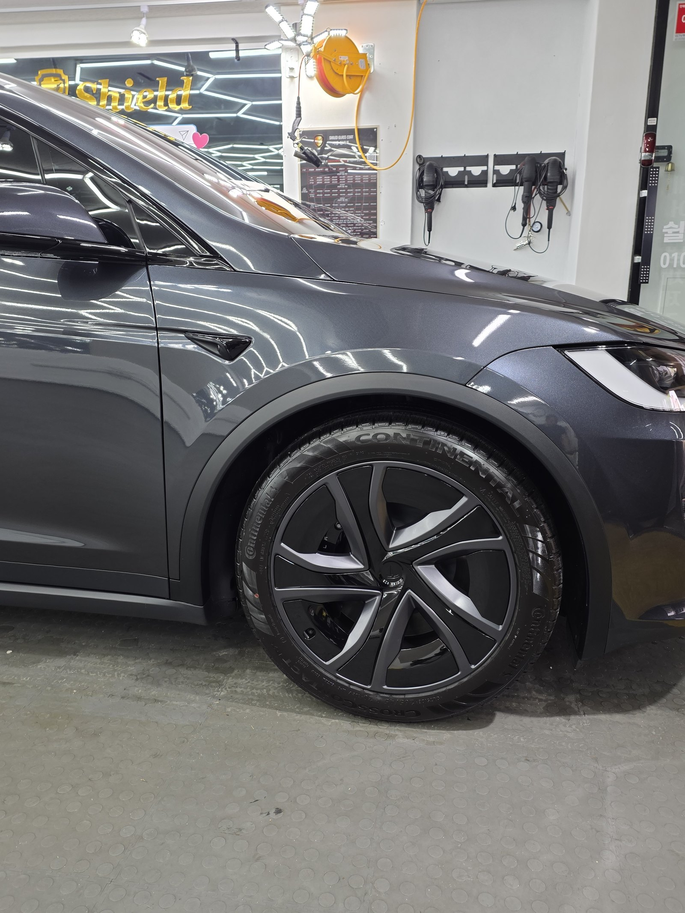
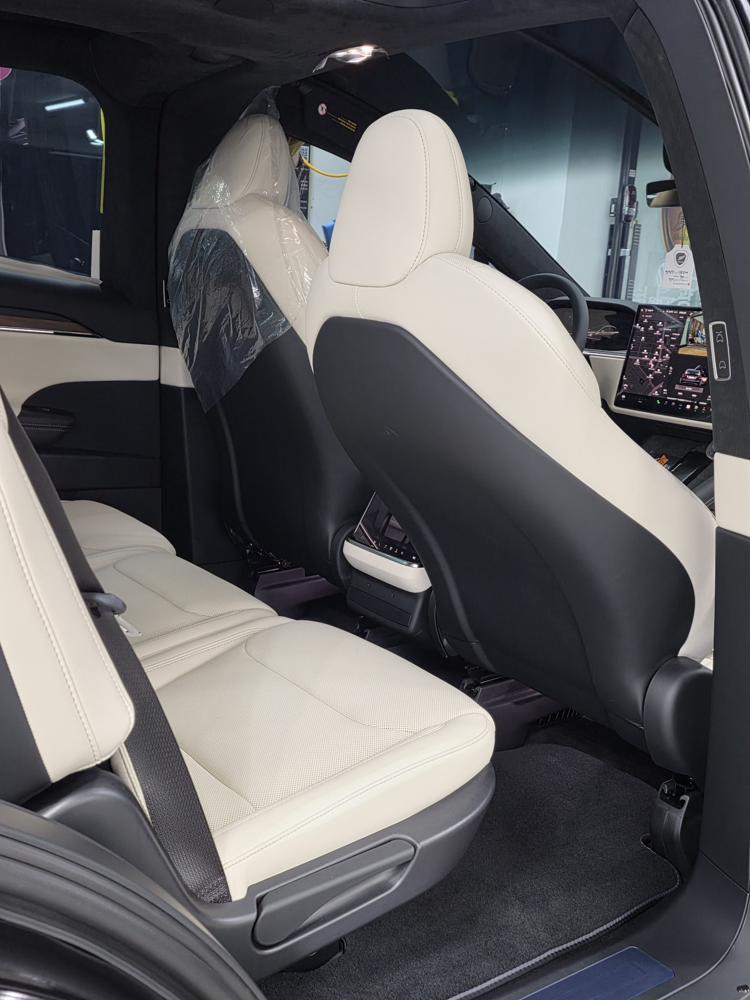
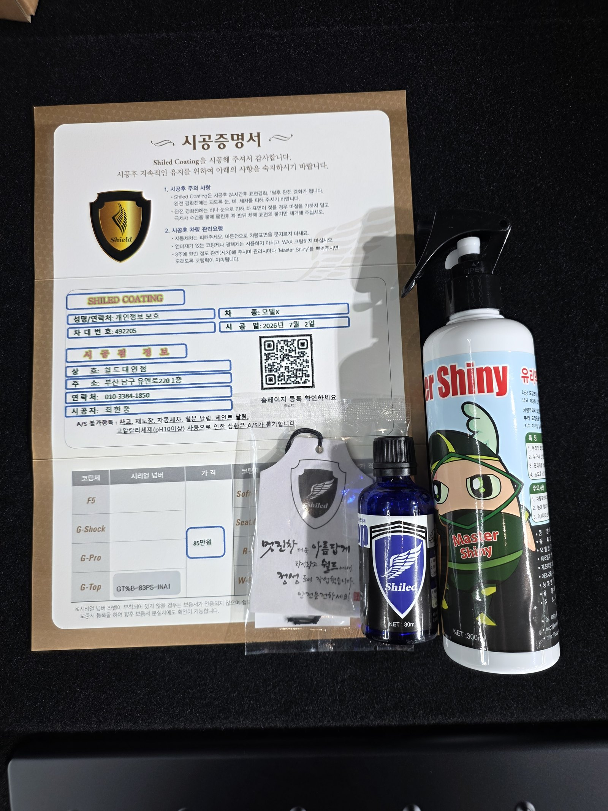

테슬라 모델X 그레이입니다. 출고한 지 얼마 안 된 새 차입니다.
이 차는 발수·방오에 강한 G-TOP 유리막코팅으로 진행했습니다.

새 차인데 왜 바로 코팅을 하나
도장면이 가장 깨끗할 때 올리는 코팅이 가장 오래갑니다.
출고 후 운행과 세차가 시작되면 미세한 잔기스와 오염이 쌓이기 시작합니다. 그게 쌓이기 전, 신차 컨디션 그대로일 때 코팅막을 입혀두는 겁니다.

그레이 신차에 왜 G-TOP인가
G-TOP은 발수력과 방오성이 강한 코팅입니다.
짙은 그레이는 물자국과 오염이 은근히 잘 드러나는 색입니다. 여기에 발수·방오가 강한 막을 올려두면 비·먼지·오염이 잘 얹히지 않습니다. 처음의 깔끔한 컨디션을 관리하기가 훨씬 수월해지는 겁니다. 아래 사진에서 보닛 위로 조명이 또렷하게 맺히는 게 코팅막이 균일하게 올라갔다는 증거입니다. 코팅제는 대표가 화학공학 전공으로 직접 개발·제조한 제품입니다.

기술자의 팁
신차라고 바로 코팅을 올리지 않습니다. 운송·보관 중 묻은 미세 오염을 디테일링 세차와 탈지로 걷어낸 뒤에 올립니다. 깨끗한 바탕 위에 올려야 코팅이 제대로 밀착합니다.


외부만이 아니라 안까지
출고 직후 차량은 안팎 컨디션을 함께 정리합니다.
실내는 아직 보호 상태가 남아 있는 신차 그대로입니다. 밝은 실내는 오염이 더 잘 보이는 만큼, 외부 도장은 G-TOP으로 발수·방오를 잡고 인도까지 깨끗한 상태로 관리합니다.

시공증명서를 함께 드립니다
모든 시공 차량에 시공증명서를 드립니다.
차종·시공일·코팅제 시리얼 번호가 적혀 있고, 홈페이지에 등록해 보증을 받으실 수 있습니다. 이 차는 G-TOP 코팅으로 기록돼 있습니다.

차종·시공일·코팅제 시리얼이 기재된 시공증명서
자주 묻는 질문
Q. 새 차인데 왜 출고 직후에 코팅을 하나요?
A. 도장면이 가장 깨끗할 때 올리는 코팅이 가장 오래갑니다. 운행·세차로 잔기스와 오염이 쌓이기 전, 신차 컨디션 그대로일 때 코팅막을 입혀두면 처음 상태를 더 오래 지킵니다.
Q. 그레이 신차에 왜 G-TOP인가요?
A. G-TOP은 발수력과 방오성이 강한 코팅입니다. 물자국·오염이 은근히 잘 드러나는 짙은 그레이에 발수·방오가 강한 막을 올려두면 비·먼지·오염이 잘 얹히지 않아, 처음의 깔끔한 컨디션을 관리하기가 수월해집니다.
Q. 신차코팅도 전처리를 하나요?
A. 합니다. 신차라도 운송·보관 중 미세 오염이 묻습니다. 디테일링 세차와 탈지로 표면을 정리한 뒤 코팅을 올려야 제대로 밀착합니다.
Q. 쉴드광택 위치와 예약은 어떻게 하나요?
A. 부산 남구 유엔로220 1F 쉴드광택입니다. 예약·상담은 010-3384-1850, 대표 최한중이 직접 상담하고 책임 시공합니다.
새 차일수록 시작점이 다릅니다. 가장 깨끗할 때 입혀두십시오.
제품을 직접 만드는 사람이 직접 시공합니다.
부산에서 신차코팅을 고민 중이시면 편하게 연락 주십시오.
어떤 차를 타냐보다 어떻게 타냐가 중요합니다~!
시공 중에는 전화를 받지 못할 때가 많습니다.
카카오톡으로 차종과 원하시는 시공을 남겨주시면 확인 후 답변드립니다.
쉴드광택 · 부산 남구 유엔로220 1F · 대표 최한중